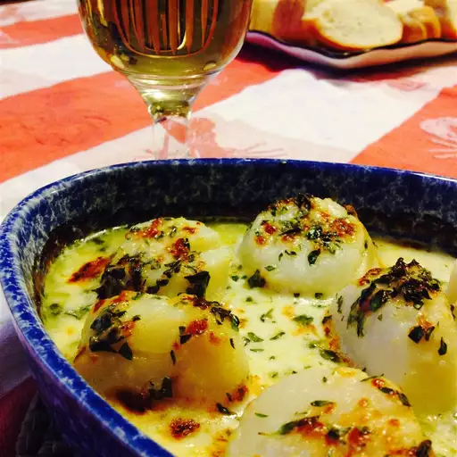

Home
Scallop Gratin

Description
As far as I'm concerned, a simple gratin is the most delicious way to cook fresh scallops. The only real way to screw this recipe up would be to use the wrong scallops. And by wrong, I mean any scallops that have been soaked in a preservative brine. These are easy to identify, as they're usually sitting in a pool of milky liquid. What you want are usually sold as wild 'day-boat,' 'diver,' or 'dry-pack' scallops. They are really expensive, and worth every penny. Serve with French bread for dipping.
Ingredients
- 2 tablespoons unsalted butter, or as needed, melted, divided
- ¼ cup crème fraîche
- ¼ cup white wine
- 1 teaspoon grated lemon zest
- 1 pinch cayenne pepper, or to taste
- 1 pinch kosher salt, or to taste
- 8 dry-pack sea scallops
- 2 tablespoons chopped fresh tarragon
- 2 tablespoons finely grated Parmesan cheese
Steps
- Preheat the oven to 450 degrees F (230 degrees C). Brush 2 small gratin dishes with 1 tablespoon melted butter.
- Whisk crème fraîche, white wine, lemon zest, cayenne pepper, and kosher salt together in a bowl until smooth; add scallops and toss to coat. Let sit until flavors begin to meld, about 5 minutes.
- Divide scallops between prepared gratin dishes; pour remaining crème fraîche sauce over top. Top with tarragon and Parmesan cheese; drizzle remaining 1 tablespoon butter over top.
- Bake in the preheated oven for 4 minutes. Increase oven setting to broil; continue cooking until scallops golden brown, slightly springy, and opaque, 2 to 4 minutes more.